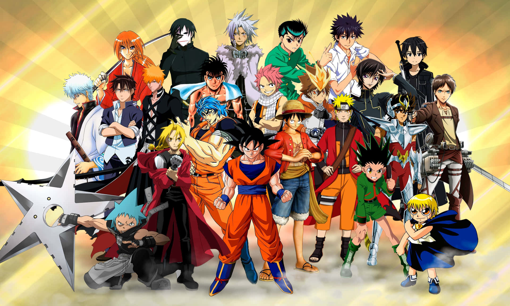
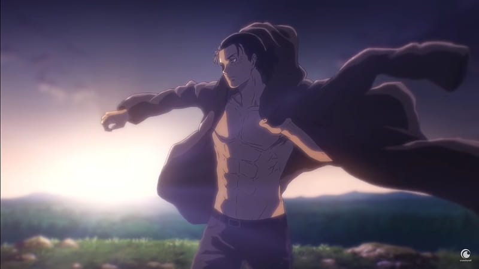
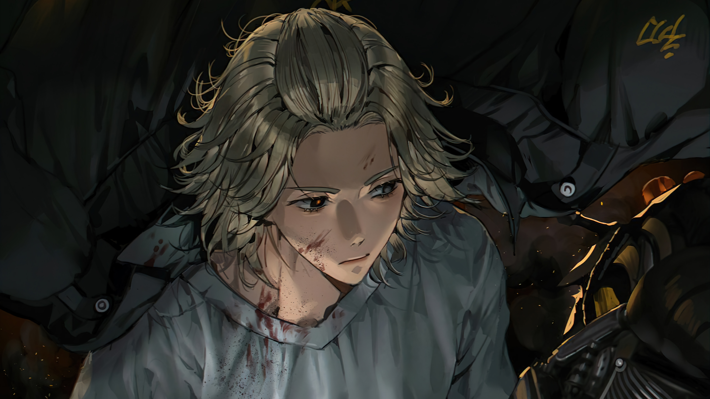

Project 2: Me & My Favorite Characters
An introduction about me, a showcase of my absolute favorite anime characters, and a deep dive into the reasons why I like them.
View Project
Uzumaki Naruto
A deep-dive chronological chronicle tracing Naruto's journey from an isolated childhood to becoming the hero and Hokage of the Hidden Leaf Village.
Explore TimeLineNamikaze Minato
An epic chronicle detailing the legacy of the Yellow Flash, exploring his lightning-fast speed, the creation of the Rasengan, and his ultimate sacrifice.
Explore Timeline
Eren Jeager
A gripping chronicle tracking Eren's dark transformation, from a vengeful kid swearing to wipe out the Titans to unleashing the catastrophic Rumbling
Explore Timeline
Yagami Light
A psychological chronicle detailing the descent of an elite student turned god of the new world, using the Death Note to execute his absolute justice.
Explore Timeline
Mikey
An intense chronicle exploring the charismatic leader of Toman, tracing the burden of the "Invincible Mikey" and his battle against dark impulses.
Explore Timeline